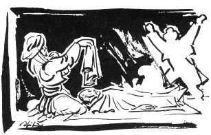

GÖK CELİLİN AĞIDI
Hemite köyünden Kara Mahmudun oğlu Gök Celil ve Musa Ağa 1800 yılında Avşarlarca öldürülüyorlar. Ağıdı amcaları kızı Fadiş yakıyor.
Yoruldum da yollar uzak
Yüzünde sakalı tozak
Emmilerin çadır kurmuş
Böğrü pınar altı sazak
Hele deliye deliye
Kahve yük vurur tülüye
Musa emmim Maraştan gelir
Salta kestirir Aliye
Celil emmim iyi iyisi
Musa emmim gölge koyusu
Ahmedi sebep diyorlar
Ölenler onun dayısı
Almalı gelin almalı
Osman Ağasına vermeli
Bizim oğlanın gelini
Yüce baş altın çalmalı
Velinin yağlığı ağlı
Şöyle gelin dili bağlı
Kara çadır büyük evli
Kıvlanmış babam uşağı
Ben gene yandım özümden
Kanlı yaş döktüm gözümden
Teberiğin indi bize
Eğer alırsa sözümden
Gene yandım ha ört gibi
Gözüm dönüyor dört gibi
Sızılattın teberiği
Enik kalmış bir kurt gibi
Tozak Kamış, okluk püskülü... Bir de savruluyor anlamına geliyor. Sakalı savruluyor.
Sazak Sazlık yer.
Salta Daha çok mollaların giydiği bir çeşit ince, kara palto. Aliye salta yaptırırmış.
Gölge koyusu Çok sayılan kişi. Ağırlığı olan kişi.
Almalı gelin almalı / Osman Ağasına vermeli Ölenlerden birisinin gelinini Osman Ağasına vermeli. Bu, ölenlerin Ağabeysi olmalı. Türkmende çoğunlukla genç ölenlerin karılarını kardeşlerine verirler.
Çalma Eskiden Türkmende kadınlar, bu ağıdın derlendiği 1937 yılında bile, sırmalı fes giyerlerdi. Fesin bütün yöresi sırma işleme olur ve bu işlemelerin üstüne bir dizi altın asılırdı. Buna da "Altın çalma" denirdi.
Velinin yağlığı ağlı Velinin mendili beyazlı, aklı.
Dili bağlı Konuşamıyor demek. Korkudan, hastalıklardan, daha başka, sonradan başa gelen sebeplerden dolayı konuşamayanlara dili bağlı derler. Anadan doğma konuşamayanlar için kullanılmaz bu deyim.
Kıvlamak Atı çok hızlı sürmek.
Teberik Armağan. Bu dizede çoğu teberik oluyor.
Ört Köz, yalım, ateş.
